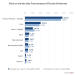

Dopage à l’IP fixe
XiTi vient de publier son Palmarès des FAI en France, calculé en décembre 2006 par la provenance des requêtes sur une base de 5189 sites.

Le résultat en images ci-contre. Orange a comme d’habitude un peu moins de 50%. Mais ce qui est étonnant c’est la faible part de Neuf+AOL (14.1%), alors que Neuf et Free (crédité ici de 20.3%) sont notoirement au coude à coude.
{kind=link}
Comment donc est mesurée cette part de marché ? Simplement XiTi prend l’ensemble des adresses IP ayant visité les sites du panel, et ventile par FAI.
Il faut savoir que certains FAI donnent à leurs clients une IP fixe (c’est pratique pour héberger un serveur) alors que d’autres attribuent une nouvelle IP à chaque session, ce qui nécessite globalement moins d’IP puisque tous les clients ne sont pas connectés en même temps. Avec la méthode de XiTi, les FAI en IP fixe ont donc un score dopé.
Free est en IP fixe, Neuf en IP dynamique.
J’ai signalé ce biais à XiTi, qui m’a répondu (rapidement d’ailleurs) qu’ils l’estimaient très faible. Une autre explication du bon score de Free dans cette étude serait la part des accès bas débit, mais je suis sceptique car alors Orange devrait être plus proche des 40% que des 50%… À suivre lors des prochaines annonces du nombre d’abonnés par les FAI…